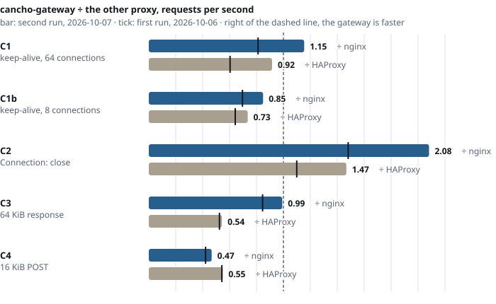
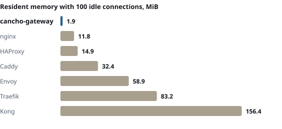

A reverse proxy you can audit.
One thread, memory sized at start, every input bounded and refused by name. Requests are parsed strictly against smuggling, and what the program can touch is a report the compiler writes and CI checks.
$ curl -si gateway/users/7 HTTP/1.1 200 OK Via: 1.1 cancho-gateway X-Request-Id: 19b3c2a1f00-1f90-0000002a $ # two body lengths: the classic smuggling shape HTTP/1.1 400 Bad Request {"status":400,"rule":"framing.two-lengths", "request_id":"19b3c2a1f00-1f90-0000002b"} # stdout: one line per request, in the same turn {"id":"…2a","method":"GET","path":"/users/7", "route":"api","upstream":"api","status":200, "outcome":"ok","ms":12,"bytes_out":1834} {"id":"…2b","status":400,"rule":"framing.two-lengths", "outcome":"refused","ms":0}
Strict at the door
Two body lengths, obsolete line folding, bare line feeds, absolute-form targets and CONNECT are refused, each with its own rule, and the connection closes.
Bounded, and refused by name
Every limit has a rule tag and a status. Memory is sized at start. No input is allowed to reach a panic.
One line per request
A request id in the response, the error and the log. A refusal says which rule, as data, not prose.
A proxy is where bad requests meet good servers.
| When | What the gateway does |
|---|---|
A request has a Content-Length and Transfer-Encoding | Refused: 400 framing.two-lengths, connection closed. The upstream never sees it. |
| An upstream is down | 502 proxy.connect. After five failures in a row (the default) the circuit opens (503 proxy.circuit-open), then lets one trial request through. |
| An upstream accepts and never answers | 504 timeout.upstream at the deadline; other clients are not delayed. |
| A kept-alive upstream connection died while idle | A body-less GET is sent once more on a fresh connection. A POST never is: 502 proxy.upstream-closed. |
A client claims X-Forwarded-For or its own request id | Not believed on a default route. A route behind your own TLS front says trust_forwarded = true. |
| A client announces 2 MB for a 1 MiB route | 413 limit.body before a byte is forwarded. |
| A client sends half a head and waits | 408 timeout.header; the others are served meanwhile. |
How it works
One process, one poller, one slot table. The deployment file is compiled into the binary: one binary per deployment.
The deployment, in one file
listen = 8080
pool_idle_max = 64
[[upstream]]
name = "api"
addr = "10.0.1.5:9000"
[[route]]
name = "api"
host = "api.example.com"
path_prefix = "/"
upstream = "api"
max_body = 1048576
trust_forwarded = true # a TLS front is in frontscripts/generate.py checks the file and writes the modules that cancho build compiles. A bad file is refused with the line, the key and the nearest valid key.We try to break it.
Smuggling shapes from RFC 9112 and the 2019 desync research, heads split at every point and mutated, upstreams that hang, reset and lie, and header behaviour compared with nginx. Each new piece is mutation-tested: change the code, and a test must fail.
What the tests found, what each number measures, and what is not claimed
What it found
- A 43 ms stall on most 16 KiB POSTs: Nagle's algorithm waiting for a delayed acknowledgement. Fixed, with a test.
- A division by zero on an unknown method, from a request any client could send. Fixed.
- A 413 followed by a TCP reset that destroyed the response. Fixed with a lingering close.
What it disproved
- That the compiler can narrow outbound addresses: it cannot yet, so the upstream set is enforced in code and tested.
- That the client's address is available: it is not, so there is no
X-Forwarded-Forof its own. - Four assumptions about what nginx forwards.
Against nginx and HAProxy, honestly.
One core each, loopback, a shared 4-core VM, five interleaved rounds, the configurations published. The gateway is slower than HAProxy on four of five cells, and slower than nginx on a 16 KiB POST and with eight connections; on the others the two runs disagree about nginx. It wins where it has nothing to lose: when every client connection is closed after one request, as it closes them anyway.

Connection: close. The first run, the latencies and the CPU of each proxy are in the tables.
Where it fits
For a few services, behind your own front or with its own TLS 1.3 listener, where you would rather read the list of limits than trust them. TLS is new, not independently reviewed, and has no certificate reload yet: not for a public edge you cannot restart.
| You run | You get | You give up | |
|---|---|---|---|
| cancho-gateway | One binary per deployment, no config file at run time | Strict parsing, a request id and a log line for every request, a report of what the program can touch, 1.9 MiB resident | Speed, HTTP/2, client keep-alive, hot reload, TLS reload, for now |
| nginx, HAProxy | A mature proxy and its config | Speed, features, years of hardening | A checked statement of what the program can do |
| Caddy, Traefik, Envoy, Kong | A larger runtime | TLS, discovery, plugins | 33 to 156 MiB resident in this test, many moving parts |
Built for
- Internal APIs, behind a TLS-terminating front or terminating TLS 1.3 itself
- A small, fixed set of upstreams
- Places where a refusal must say why, as data
Not for
- A public edge that needs HTTP/2, client certificates, or a certificate renewed without a restart
- Throughput: use nginx or HAProxy
- Dynamic discovery or hot reload
What you get
Routes
Host, then the longest segment-boundary prefix that allows the method. A tie is a config error.
Strict framing
The smuggling corpus, split delivery and mutated heads, against an independent check.
Upstream pool
Bounded keep-alive connections per upstream, idle expiry, one safe retry.
Passive circuit
Consecutive failures open it; one half-open trial; a local refusal never uses the trial.
Header policy
Hop-by-hop removed, Via, X-Forwarded-Host/Proto, untrusted claims dropped.
Request id
In the upstream request, the response, the error body and the log line. Stable across a retry.
Access log
One JSON line per request: route, upstream, status, rule, timings, bytes. No query string, ever.
Limits
Per-route body size, header and total deadlines, a bounded pool, a bounded log queue.
Try it
Quickest: download the demo binary from the latest release. To point it at your own upstreams, build it from source:
git clone https://github.com/alpibrusl/cancho && git clone https://github.com/alpibrusl/cancho-gateway
cd cancho-gateway
git -C ../cancho checkout "$(sed -n 's/^cancho *= *"\([0-9a-f]*\)".*/\1/p' cancho.toml)"
(cd ../cancho && cargo build --release -p cancho)
export PATH="$PWD/../cancho/target/release:$PATH"
cp deploy/example.toml my.toml # edit listen, upstreams, routes
python3 scripts/generate.py my.toml # checks it, writes generated/
cancho build # one binary: build/gateway
build/gatewayBuilding needs the pinned cancho compiler (the commit in cancho.toml) and Python 3. The README has the rest.
Built in cancho
cancho is a typed systems language whose compiler writes down what a program may do. For infrastructure that is the point: the report is committed and checked in CI, so a new capability is a change somebody has to approve.
| The gateway’s report | |
|---|---|
| Files | read-only: with tls_listen, exactly fs_read("/dev/urandom") and the certificate directory compiled into the binary, and dir_read, file_read through its handle; no file is ever written. Without tls_listen the capability is released unread and no fs_read is reported. |
| Foreign calls | none (ffi is released at start) |
| Memory | allocated at start, bounded |
| Network | net_in("") and net_out(""): not narrowed. The compiler has one bound for listening and connecting, so the upstream set is enforced in code and tested, not proved. |
| Everything else | args, clock, conn_accept, conn_read, conn_write, heap, io_write, poll |
No unsafe. The report is manifests/gateway.authority.json (and gateway-tls.authority.json for a deployment with TLS); a change to either fails CI. Every label of the report, explained, and what it does not prove.